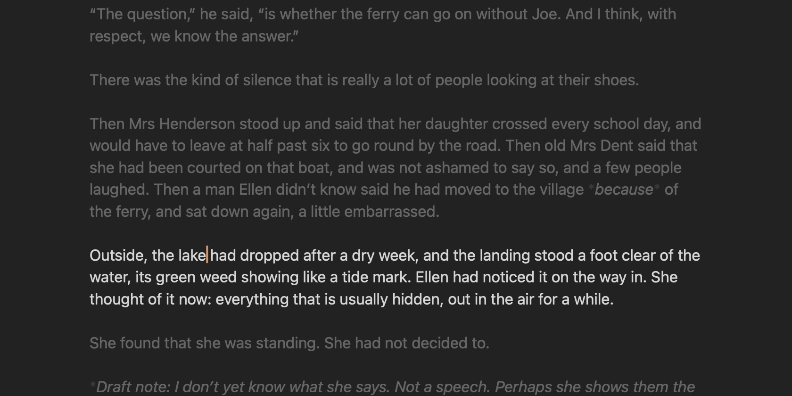
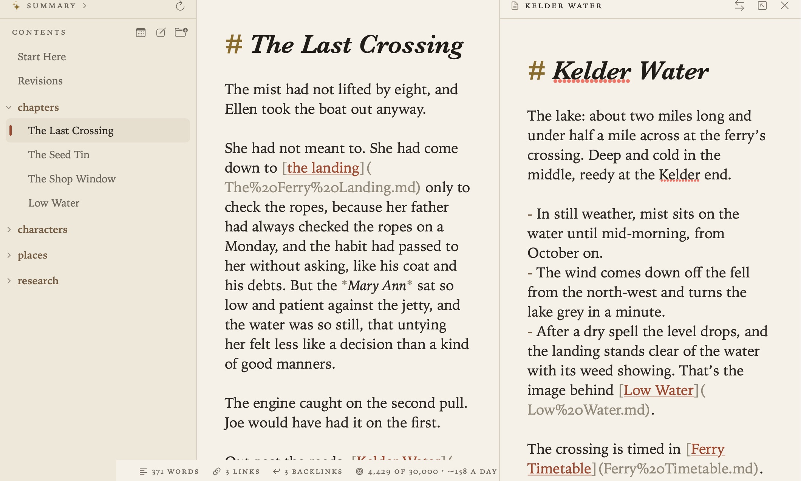

Focus Mode and Split View
Sometimes you want one document and nothing else on screen. Other times you want two side by side.
Focus mode
When you want to get your head down, choose View ▸ Focus Mode (⇧⌘D), or the button in the running head. The contents, the margin and the word count go away, leaving just the page. Press ⇧⌘D again to come back.
In Settings ▸ Appearance, under In focus mode:
- Keep the current line in the middle of the window, like a typewriter, so your eyes stay in one place as you write.
- Fade all but the current paragraph, so the rest of the document recedes.
Both are on by default. The line at the top of the page stays put as focus mode comes and goes, so you don’t lose your place.

Split view
To keep a second document open beside the one you’re writing, hold ⌥ and click it. That works on any of these:
- a link in a document
- a document in the contents, or right-click it and choose Open in Split View
- a sidenote or a mention in the margin
- a search result or a task

The pane is a full editor in its own right, with its own Undo and its own find box, and it saves the same way the page does. It can show a PDF or a picture too. Another ⌥-click replaces what’s in the pane.
- The buttons at the top of the pane swap it with the page, open its document on the page, or close it.
- View ▸ Close Side Pane (⌥⌘W), or esc in the pane, closes it.
- Drag the divider to share out the width. In a narrow window the margin is hidden first, then the contents.
A document can be open in only one place at a time.
Related
- Writing and Formatting
- Themes and Settings, for text width and size